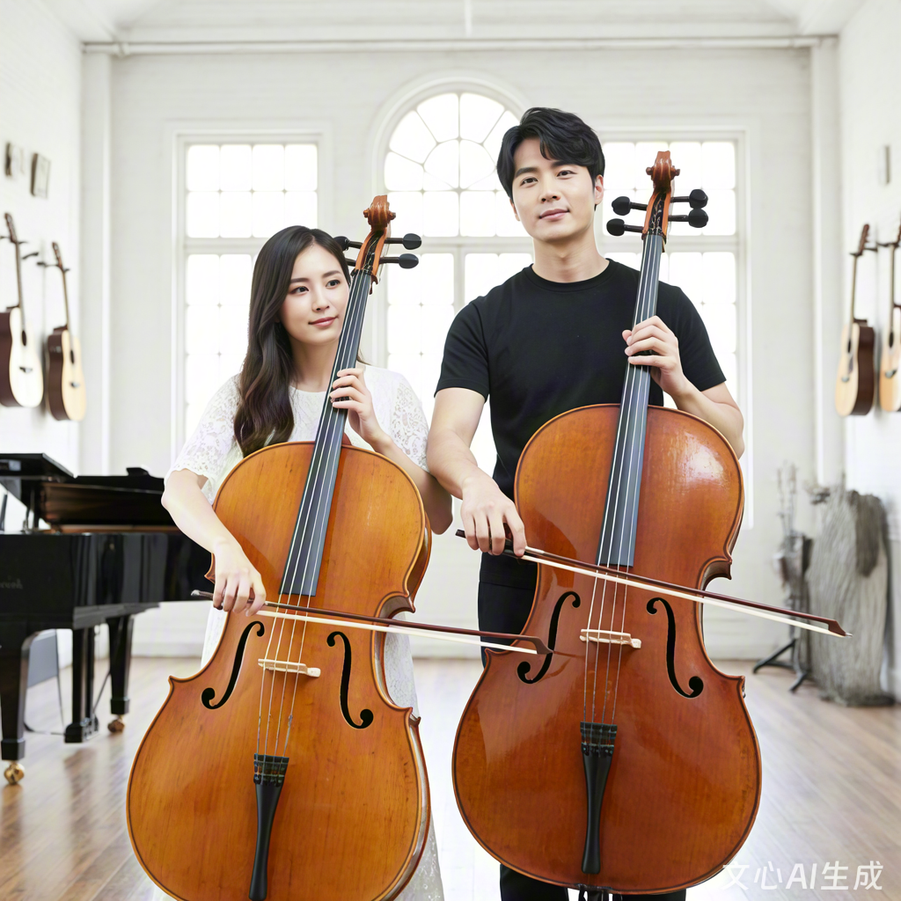
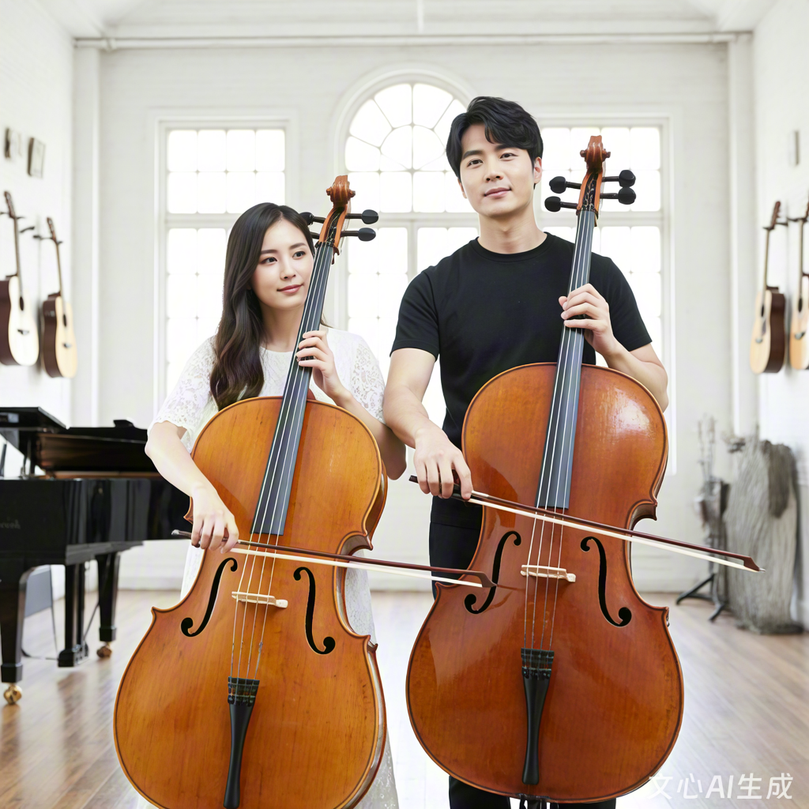

社团简介 | 活动安排 | 风采展示 | 社员故事 | 在线报名
校园大提琴社成立于 2015 年，是学校最具活力的音乐类社团之一，也是现代音乐文化的重要传播平台。十年来，社团始终秉持"以乐会友、以声传情"的宗旨，致力于为热爱大提琴、钟情现代音乐的同学搭建学习交流、展示自我的优质平台。从最初仅有5名成员的小型兴趣小组，发展至今已拥有注册社员150余人，多次获评学校"四星级社团""优秀文艺社团"等荣誉称号，成为校园音乐文化中不可或缺的一部分。
大提琴作为现代乐队的灵魂乐器，是连接节奏与和声的纽带，其低沉稳重的音色为音乐增添了丰富的层次感。社团以大提琴教学与表演为核心，活动内容丰富多元，涵盖基础技法培训、即兴演奏、乐队合奏、音乐制作、校园演出等多个方面。无论你是零基础的"音乐小白"，还是有一定基础的爱好者，或是擅长其他乐器的音乐人，大提琴社都能为你提供展示才华的舞台。
为了满足不同层次社员的需求，社团建立了完善的教学体系。每周固定安排两次线下集训，邀请专业大提琴手和技艺精湛的学长学姐进行分层教学：基础班从识谱、持琴姿势、指法（轮指、滑音、勾弦等）教起，循序渐进培养社员的演奏基础；进阶班则专注于即兴演奏、音乐理论、效果器使用等专业技能；表演班针对有较高基础的社员，开展乐队合奏、舞台表演等实战训练。同时，社团配备了专业大提琴音箱、效果器等设备，供社员日常练习使用。
除了常规教学，社团十分注重实践与创新。每年定期举办"低音狂想"专场音乐会、"即兴之夜"开放麦活动，让社员在舞台上展现自我；组织社员参与校园音乐节、迎新晚会等大型活动，积累演出经验；与校内外乐队、音乐社团建立长期合作，开展联合演出、音乐工作坊等活动，拓宽社员的音乐视野。此外，社团还会组织音乐节观摩、录音棚体验等特色活动，让社员近距离感受专业音乐制作的魅力。
在社团氛围营造上，大提琴社始终坚持"自由包容、创新进取"的理念。这里没有严格的等级之分，老社员会耐心指导新人，社员之间互相切磋技艺、分享音乐心得，课后一起讨论喜欢的乐队和音乐风格，周末组织音乐欣赏会、即兴演奏会等，让大家在轻松愉快的氛围中共同进步。许多社员表示，加入大提琴社不仅掌握了一门乐器，更培养了团队协作能力和舞台表现力，这段经历成为了大学生活中最难忘的回忆。
十年的沉淀，大提琴社培养了一批又一批热爱音乐的青年，不少毕业生走上了音乐创作、音乐教育的道路。如今，大提琴社正以更开放的姿态迎接新成员的加入，我们期待与你一起，在琴弦的振动中，感受音乐的力量，用低沉的大提琴声谱写青春华章！
为让新老社员清晰了解学期规划，大提琴社精心安排了以下活动，兼顾基础教学、实践展示与音乐交流，具体时间可能根据学校统一安排微调，详情将通过社团通知群同步。
| 大提琴社 2025 年春季学期活动安排表 | |||
|---|---|---|---|
| 活动名称 | 活动时间 | 活动地点 | 负责人 |
| 新成员见面会暨破冰活动 | 3 月第 1 周 周日下午 14:00-16:30 | 学生活动中心 302 音乐教室 | 张明 |
| 大提琴基础教学公开课 | 3 月第 2 周 周六上午 9:00-11:30 | 李华 | |
| 即兴演奏工作坊（第一期） | 3 月第 4 周至 4 月第 3 周 每周五晚 19:00-21:00 | 学生活动中心 302 音乐教室 | 王强 |
| "低音狂想"校园音乐会 | 4 月第 4 周 周日下午 15:00-17:00 | 学校大礼堂多功能厅 | 张明、李华 |
| 音乐制作讲座：《大提琴在现代音乐中的运用》 | 5 月第 2 周 周五晚 19:00-20:30 | 学术报告厅 201 | 特邀音乐制作人 |
| 高校音乐社团交流汇演 | 5 月第 4 周 周六全天 | 邻校大学生活动中心 | 全体骨干 |
| 乐队合奏排练 | 6 月第 1 周至第 2 周 每周六、日上午 9:00-12:00 | 学生活动中心 302 音乐教室 | 李华 |
| "声动校园"期末专场音乐会 | 6 月第 3 周 周六晚 19:00-21:00 | 学校大礼堂 | 全体骨干 |
除上表所列活动外，社团每周二、四晚 19:00-21:00 开放音乐教室供社员自由练习，期间安排骨干社员轮流值班答疑；每月举办一次"音乐分享会"，交流音乐心得、探讨演奏技巧；根据社员需求，不定期开展效果器使用、录音技巧等特色工作坊，丰富学习体验。
以下是上学期"低音狂想"专场音乐会的精彩瞬间，画面中社员们或独奏或合奏，用低沉的大提琴声点燃现场氛围。点击图片可跳转至详细活动介绍页面，了解音乐会背后的筹备故事与曲目解析。
这张照片拍摄于音乐会的压轴曲目《低音风暴》表演环节，8名大提琴手同台演奏，低音声部此起彼伏，配合灯光效果，将现场气氛推向高潮，赢得了观众的热烈掌声。除了原创作品，音乐会还呈现了多首经典摇滚、放克曲目的大提琴改编版本，展现了大提琴在音乐中的多样表现力。

大提琴社的成员们在日常排练和正式演出中都展现出了专业的演奏技巧和对音乐的热爱。从音乐厅的正式演出到排练室的日常练习，每一个瞬间都记录着我们对音乐的追求和对大提琴艺术的执着。
以下为大提琴社 2025 年招新宣传视频，视频中收录了社员日常练习、活动精彩瞬间、演出片段等内容，带您直观感受社团的活力与氛围。视频时长1分30秒，采用mp4格式，可循环播放。
大一刚入学时，我在百团大战上被大提琴社摊位前动感的低音吸引，驻足观看了很久。虽然对音乐一窍不通，但那种震撼的低频让我心跳加速。社团的学长看出了我的兴趣，热情地邀请我试弹，并告诉我："大提琴是乐队的灵魂，没有好的大提琴手，再好的乐队也会失去色彩。"就是这句话，让我决定加入大提琴社，开启我的音乐之旅。
刚开始学习时，困难比想象中多得多。手指按弦的疼痛、节奏感的缺失、乐理知识的匮乏，每一项都是挑战。记得第一次参加合奏时，我紧张得手心冒汗，完全跟不上节奏，甚至弹错了调。正当我沮丧不已时，社团的李华学姐主动留下来陪我练习，一个音符一个音符地纠正我的指法，还分享了她初学时的糗事。在学姐的鼓励下，我每天坚持练习两小时，从最基础的音阶开始，慢慢找到了感觉。
大二那年，我有幸加入了学校的摇滚乐队担任大提琴手。第一次正式演出是在学校的迎新晚会上，面对台下近千名观众，我的双腿直打颤。但当音乐响起，我完全沉浸在演奏中，感受着大提琴带来的律动。演出结束后，听到观众的掌声和欢呼，那种成就感到现在都记忆犹新。如今，我已经能够自信地站在舞台上，用大提琴表达自己的情感，这都要感谢大提琴社这个温暖的大家庭。
我是一名钢琴专业的学生，加入大提琴社纯属偶然。大一下学期，学校举办"音乐无界"交流活动，我作为钢琴手与大提琴社的同学们合作了一首爵士风格的曲子。排练过程中，我被大提琴独特的音色和表现力深深吸引，那种低沉而富有弹性的声音让我着迷。活动结束后，我毫不犹豫地加入了大提琴社，想探索这件乐器的无限可能。
虽然有一定的音乐基础，但大提琴对我来说依然充满挑战。钢琴是旋律性乐器，而大提琴更注重节奏和律动，这让我不得不重新思考音乐的表达方式。在社团指导老师的建议下，我开始尝试将古典钢琴曲改编成大提琴独奏，用低音声部重新诠释经典旋律。这种跨界的尝试不仅让我对音乐有了更深的理解，也让我的演奏风格更加多元。
在大提琴社的两年里，我结识了一群志同道合的朋友。我们经常一起即兴演奏，尝试不同的音乐风格，从爵士到放克，从摇滚到电子，大提琴总能完美融入其中。去年，我们组建了一支融合乐队，将中国传统音乐元素与现代大提琴演奏相结合，在校内外演出中获得了广泛好评。这些经历让我明白，音乐没有界限，只要敢于尝试，就能创造出无限可能。
我是一个性格内向的人，刚进入大学时，面对陌生的环境和同学，我总是感到无所适从。一次偶然的机会，我听到了大提琴社的招新演出，那低沉稳重的声音让我感到莫名的安心。虽然对音乐一窍不通，但我还是鼓起勇气报了名，想通过学习大提琴来充实自己的大学生活。
加入社团后，我发现这里的氛围特别温暖。学长学姐们都很耐心，从最基础的持琴姿势开始教我，其他社员也经常鼓励我。记得第一次在大家面前弹奏时，我紧张得手都在抖，弹得断断续续的。但没有人笑话我，反而给了我热烈的掌声。在大家的鼓励下，我慢慢变得自信起来，开始享受弹奏的乐趣。
大提琴社不仅教会了我一门乐器，更让我找到了归属感。在这里，我认识了一群志同道合的朋友，我们一起练琴、一起演出、一起分享生活中的点点滴滴。每当遇到困难，总有人伸出援手；每当取得进步，大家都会真心为你高兴。这种温暖和感动，是我大学生活中最宝贵的财富。
现在，我已经是大提琴社的副社长了，负责指导新社员。看着他们从零开始，一点一点进步，我仿佛看到了当初的自己。我希望通过自己的经历，鼓励更多像我一样内向的同学，勇敢地追求自己的梦想。因为我知道，在大提琴社这个大家庭里，你永远不会孤单。
欢迎热爱大提琴、钟情现代音乐的你加入我们！请认真填写以下信息，确保联系方式准确无误。提交后，社团将在3个工作日内通过电话或短信通知你后续面谈及入社事宜，如有疑问可添加社团QQ群：987654321咨询。
温馨提示：请确保所填信息真实有效，社团将对个人信息严格保密，仅用于入社审核及活动通知。提交后如需修改信息，可重新填写表单并提交，最新提交信息将覆盖原有记录。
校园大提琴社 · 2025 招新专用网页
咨询电话：138xxxx5678 | 社团QQ群：987654321